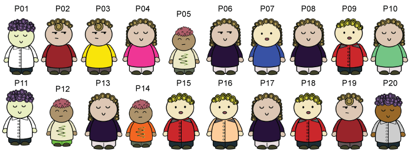
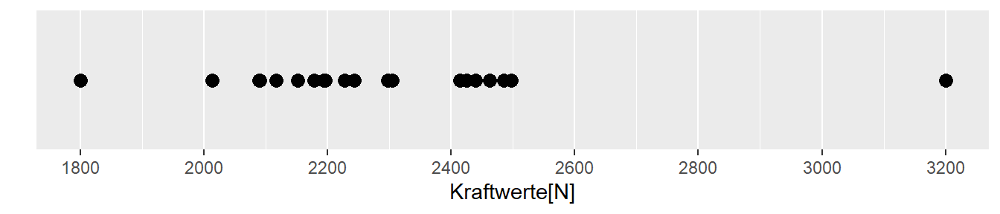
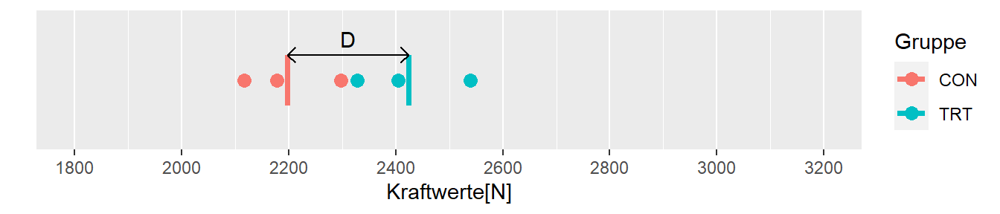
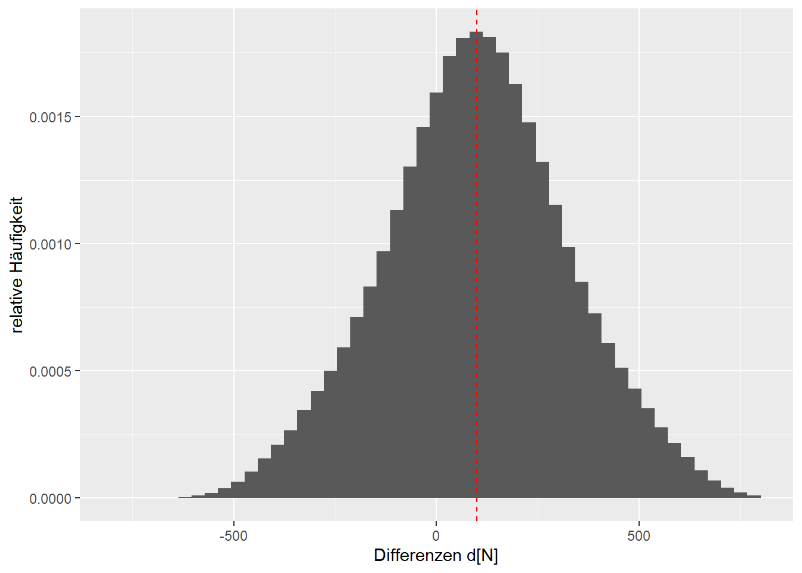
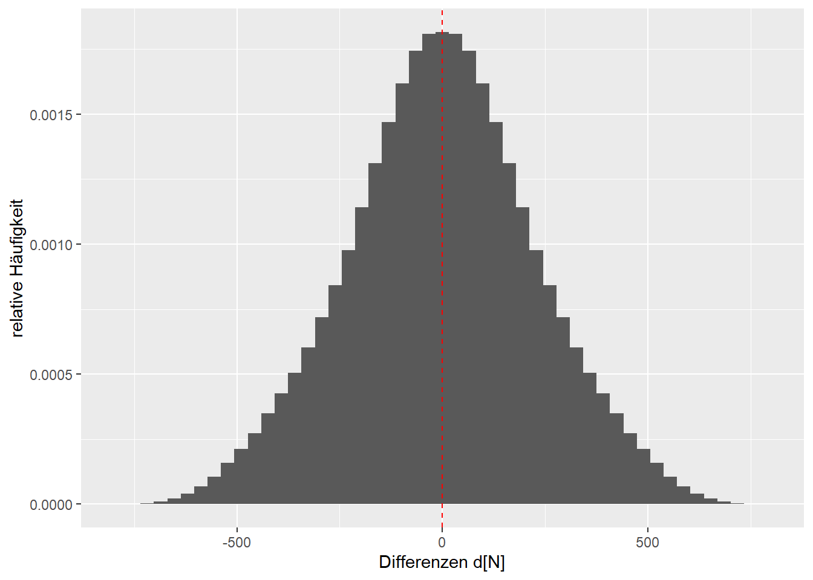
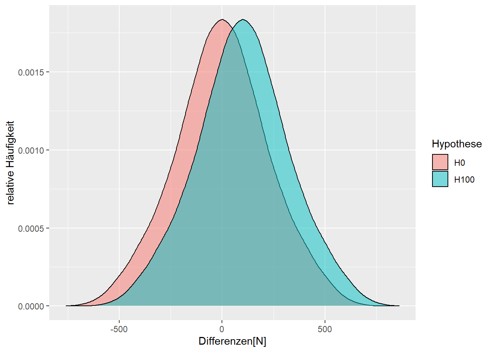
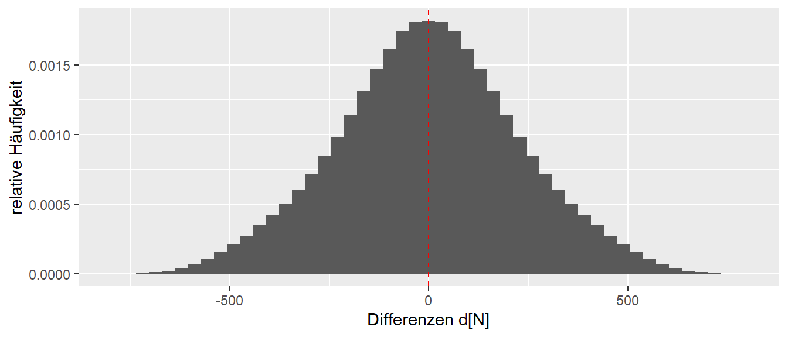

1 Eine kleine Welt
Beginnen wir mit eine einfachen Modell. Dazu nehmen wir eine kleine Welt die nur aus 20 Personen besteht. In Abbildung 1.1 können wir alle Personen einzeln sehen. Die Gesamtheit aller Personen (allgmeine Objekte) über die wir eine Aussage treffen woll bezeichnen wir als eine Population.

Definition 1.1 (Population) Eine Population oder auch die Grundgesamtheit ist Gesamtheit aller Objekte/Dinge/Personen über die eine Aussage getroffen werden soll.
Wir wollen nun eine Krafttrainingsstudie durchführen um die Beinkraft zu erhöhen. Wir haben allerdings nur sehr wenige Ressourcen (bzw. wir sind faul) und können insgesamt nur sechs Messungen durchführen. Aus einem kürzlich durchgeführten Census haben wir aber die Kraftwerte der ganzen Population. Wir stellen die Kraftwerte zunächst mittels einer Tabelle dar (siehe Tabelle 1.1)
| ID | Kraft[N] | ID | Kraft[N] |
|---|---|---|---|
| P01 | 2414 | P11 | 2243 |
| P02 | 2462 | P12 | 2497 |
| P03 | 2178 | P13 | 1800 |
| P04 | 2013 | P14 | 2152 |
| P05 | 2194 | P15 | 2089 |
| P06 | 2425 | P16 | 2090 |
| P07 | 2305 | P17 | 3200 |
| P08 | 2117 | P18 | 2196 |
| P09 | 2298 | P19 | 2485 |
| P10 | 2228 | P20 | 2440 |
Selbst bei 20 Werten ist diese Darstellung wenig übersichtlich. Wir könnten zwar Zeile für Zeile durchgehen und nach etwas notieren und suchen würden wir sehen das der Maximalwert bei \(3200\)N für P17 und der Minimalwert von Person P13 bei \(1800\)N liegt. Aber wirklich einfach ist diese Darstellung nicht. Für solche univariaten Daten (uni = eins) kann eine übersichtlichere Darstellung mittels eines sogenannten Dotplots erreicht werden (siehe Abbildung 1.2).

Hier kann deutlich schneller abgelesen werden was das Minimum und das Maximum der Daten ist, sowie es kann auch direkt abgeschätzt werden in welchem Bereich sich der Großteil der Daten befindet. Allerdings wird durch diese Art der Darstellung die Information über welche Person die jeweiligen Werte besitzt nicht mehr dargestellt. Dies stellt in den meisten Fällen allerdings kein Problem dar, da wir in den meisten Fällen aussagen über die Gruppe und weniger über einzelne Personen machen wollen.
Gehen wir jetzt von der folgenden Fragestellung aus. Wir wollen den Gesundheitsstatus unserer Lummerländer verbessern und wollen dazu ein Krafttraining durchführen. Da evidenzbasiert arbeiten wollen, möchten wir überprüfen ob wirklich ein Verbesserung der Kraft durch das Training stattgefunden hat. Da es sich aber gleichzeitig um unsere selbst geschaffene Welt handelt führen wir natürlich ein perfektes Krafttraining, eine perfekte Intervention, durch. D.h wir stellen uns immer wieder als unwissend da und geben vor das wir gar nicht wissen, das das Training perfekt effektiv ist.
D.h. wir führen gleichzeitig ein Gedankenexperiment durch. Wir führen ein Krafttraining für die Beine durch. Das Training ist perfekt und verbessert die Kraftleistung um genau \(+100\)N. Dieser Kraftzuwachs unabhängig davon welche Person aus unserer Population das Training durchführt (Warum ist das keine realistische Annahme?). Wir wollen zwei Gruppen miteinander vergleichen eine Interventionsgruppe und eine Kontrollgruppe. In beiden Gruppen sollen jeweils \(n_{\text{TRT}} = n_{\text{CON}} = 3\) TeilnehmerInnen bzw. Teilnehmer einbezogen werden da wir nicht mehr Ressourcen für mehr ProbandInnen haben.
Die erste Frage die sich nun stellt ist wie wählen wir die sechs Personen aus unserer Population aus und wie teilen wir die sechs Personen in die beiden Gruppen? Nach etwas überlegen kommen wir darauf, dass wir am besten eine zufällige Stichprobe ziehen sollten (Warum?).
Definition 1.2 (Stichprobe) Eine Stichprobe ist eine Teilmenge der Objekte aus der Population.
Definition 1.3 (Zufallsstichprobe) Eine Zufallsstichprobe ist eine Teilmenge der Objekte aus der Population die zufällig ausgewählt wurde.
Diese sechs Personen, unsere Stichprobe, wird dann wiederum zufällig auf die beiden Gruppen aufgeteilt.
Ein Zufallszahlengenerator hat die Zahlen \(i = \{3,7,8,9,10,20\}\) gezogen. Die entsprechenden Personen werden aus der Population ausgewählt und wiederum zufällig in die beiden Gruppen aufgeteilt (siehe Tabelle 1.2).
| ID | Kraft[N] | Gruppe |
|---|---|---|
| P08 | 2117 | CON |
| P09 | 2298 | CON |
| P03 | 2178 | CON |
| P07 | 2305 | TRT |
| P10 | 2228 | TRT |
| P20 | 2440 | TRT |
Mit diesen sechs Personen führen wir jetzt unser Experiment durch. Die drei Personen aus der Kontrollgruppe, unterlaufen im Interventionszeitraum nur ein Stretchtraining während die Interventionsgruppe zweimal die Woche für 12 Wochen unser perfektes Krafttraining durchführt. Nach diesem Zeitraum messen wir alle Personen aus beiden Gruppen und erhalten das folgende Ergebnis (siehe Tabelle 1.3).
Tabelle 1.3: Ergebnis der Intervention in Experiment 1 für die Kontroll- und die Interventionsgruppe.
| ID | Kraft[N] |
|---|---|
| P08 | 2117 |
| P09 | 2298 |
| P03 | 2178 |
| \(\bar{K}\) | 2198 |
| ID | Kraft[N] |
|---|---|
| P07 | 2405 |
| P10 | 2328 |
| P20 | 2540 |
| \(\bar{K}\) | 2424 |
Für beide Gruppen ist jeweils der Mittelwert berechnet worden, um die Wert miteinander vergleichen zu können. Später werden wir noch weitere Maße kennenlernen die es ermöglichen zwei Mengen von Werten miteinander zu vergleichen.
Definition 1.4 (Mittelwert) Der Mittelwert über \(n\) Werte berechnet sich nach der Formel:
\[ \bar{x} = \frac{\sum_{i=1}^n x_i}{n} \tag{1.1}\]
Der Mittelwert wird mit einem Strich über der Variable dargestellt.
Damit lernen wir direkt auch ein neues Konzept kennen. Nämlich das der Statistik. Ein Wert der auf der erhobenen Stichprobe berechnet wird, wird als Statistik bezeichnet.
Definition 1.5 (Statistik) Ein auf einer Stichprobe berechnet Wert, wird als Statistik bezeichnet.
Um jetzt Unterschied zwischen den beiden Gruppen zu untersuchen berechnen wir die Differenz D zwischen den beiden Mittelwerten \(D = \bar{K}_{\text{TRT}} - \bar{K}_{\text{CON}}\). Die Differenz kann natürlich auch in die andere Richtung berechnet werden und es würde sich das Vorzeichen ändern. Hier gibt es keine Vorgaben, sondern die Richtung kann frei bestimmt werden. Wenn bekannt ist in welcher Richtung der Unterschied berechnet wird, dann stellt dies keine Problem dar. Im vorliegenden Fall ziehen wir die Interventionsgruppe von der Kontrollgruppe ab, da wir davon ausgehen, dass die Intervention zu einer Krafterhöhung führt und wir dadurch einen positiven Unterschied erhalten (vgl. Gleichung 1.2)
\[ D = 2424N - 2198N = 226 N \tag{1.2}\]
Da der Wert D, wiederum auf den Daten der Stichprobe berechnet wird, handelt es sich ebenfalls um eine Statistik.

1.1 Intervention erhöht Kraftfähigkeit um 100 N
1.1.1 Stichprobe 2
Kontrollgruppe
| ID | Kraft[N] |
|---|---|
| P12 | 2497 |
| P02 | 2462 |
| P19 | 2485 |
Mittelwert: 2481 N
Interventionsgruppe
| ID | Kraft[N] |
|---|---|
| P04 | 2113 |
| P08 | 2217 |
| P16 | 2190 |
Mittelwert: 2173 N
Differenz: \(d = -308\) N
1.2 Intervention erhöht Kraftfähigkeit um 100 N
1.2.1 Stichprobe 3
Kontrollgruppe
| ID | Kraft[N] |
|---|---|
| P06 | 2425 |
| P05 | 2194 |
| P07 | 2305 |
Mittelwert: 2308 N
Interventionsgruppe
| ID | Kraft[N] |
|---|---|
| P20 | 2540 |
| P14 | 2252 |
| P16 | 2190 |
Mittelwert: 2327 N
Differenz: \(d = 19\) N
1.3 Verschiedene Möglichkeiten Stichproben zu ziehen

Insgesamt sind 775200 verschiedene Kombination möglich.
1.4 Alle Möglichkeiten wenn \(\delta=100\)

Die Verteilung der d’s wird als Stichprobenverteilung bezeichnet.
1.5 Alle Möglichkeiten wenn \(\delta=0\)

1.6 Alle Möglichkeiten wenn \(\delta=0\) oder \(\delta=100\)

1.7 Ungewissheit
Die Anwendung von statistischen Methoden bietet die Möglichkeiten unter Ungewissheit in möglichst vielen Fällen korrekte Entscheidungen zu treffen. Die getroffene Aussage bezieht sich immer nur auf die vorliegenden Daten und ist keine Aussage über die zugrundeliegende Theorie.
1.8 Wie kann ich anhand eines Datenpunktes etwas sagen?
2 Entscheiden
2.1 Entscheidungsmöglichkeiten
2.2 Nehmen wir einen einfacheren Fall mit \(\delta = 500\)N

Auch: \(\alpha\)-Fehler: Fehler 1. Art, \(\beta\)-Fehler: Fehler 2. Art↩︎